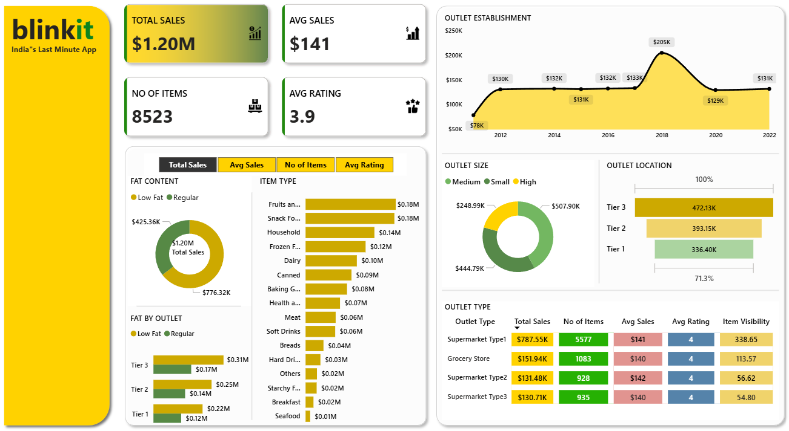

An interactive Power BI dashboard developed to analyse Blinkit's sales performance, outlet performance, product categories, customer ratings, and inventory trends.
← Back to PortfolioThe Blinkit Sales Dashboard provides a comprehensive overview of retail sales performance across different outlet types, locations, product categories, and customer ratings. The dashboard helps businesses monitor KPIs and identify opportunities to improve sales performance.
Retail businesses generate large amounts of sales data every day. Analysing outlet performance, product categories, customer preferences, and inventory manually is time-consuming. This dashboard centralises key retail metrics into one interactive report to support business decision-making.
Power Query • DAX • Data Cleaning • Data Modelling • Dashboard Design

Monitor total revenue generated across all outlets.
Analyse average sales performance per transaction.
Track the total number of products sold.
Measure customer satisfaction using product ratings.
Compare sales by outlet type, size and location.
Analyse sales across different product categories.
Compare sales by low-fat and regular products.
Track outlet growth and establishment trends over time.
This dashboard provides a comprehensive view of Blinkit's retail performance, enabling business users to analyse sales, customer behaviour, outlet performance, and product trends. The insights support data-driven decisions that improve operational efficiency and business growth.